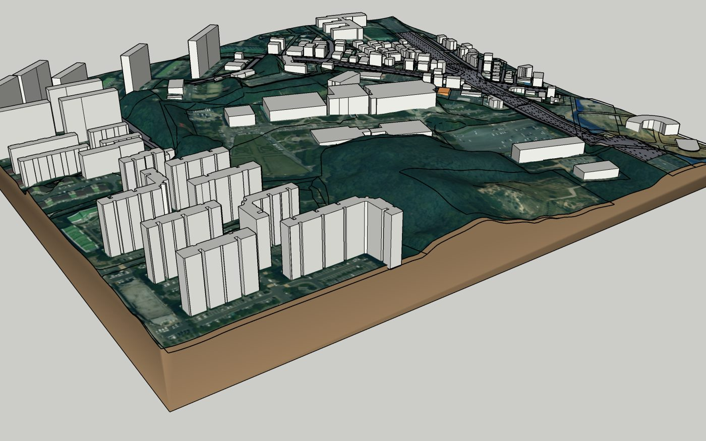
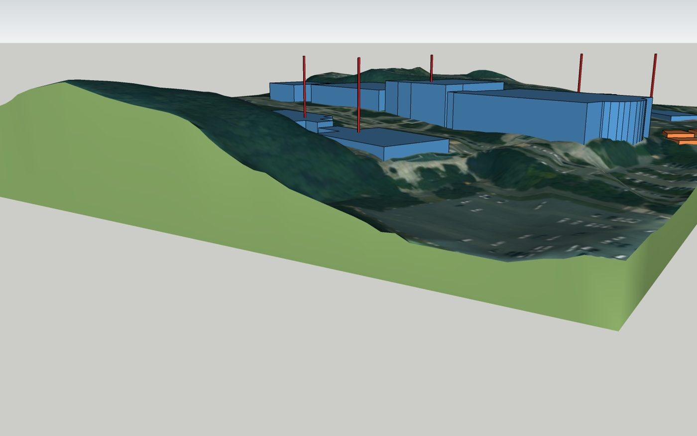

주소나 지도 영역만으로 5m 지형·실측 층수 건물·정사영상이 들어간 3D 대지모델을 만들어 SketchUp·Rhino로 가져옵니다.
최종 수정 2026-09-21 · 앱: 대지모델 생성기 · 텍스트 파일로 받기
두 가지 방법이 있고, 결과물의 내용은 같습니다.
설치할 것이 없습니다. 브라우저에서 영역을 고르고 파일을 받아 SketchUp이나 Rhino에서 엽니다.
처음 쓰거나, Rhino를 쓰거나, 파일을 동료에게 넘길 때.
SketchUp 메뉴에서 주소를 넣으면 지금 열린 모델 안에 바로 조립됩니다. 한 번 설치가 필요합니다.
SketchUp으로 작업을 자주 할 때.
| 항목 | 내용 |
|---|---|
| 지형(TIN) | 5m 지형. 평지는 큰 삼각형, 경사지는 촘촘하게(오차 25cm 이내). |
| 정사영상 텍스처 | 항공사진을 지형에 입힙니다. 넓은 영역은 해상도가 자동으로 한 단계 낮아집니다. |
| 지적(대지경계) | 필지 경계선을 지형 위에 얹습니다. |
| 도로(노면) | 도로·보도 면과 차선. 지형을 도로에 맞게 깎거나 돋워 이음매 없이 붙입니다. |
| 수계(하천·호소) | 하천·호수를 평평한 수면으로 넣습니다. |
| 도시계획 | 지구단위계획구역, 도시계획도로, 공원·녹지·광장 등 결정선. 표시만 하며 법적 판단이 아닙니다. |
| 자동 QA | 급경사에 놓인 건물, 겹친 건물, 지형 밖 건물 등을 찾아 목록과 3D 핀으로 보여 줍니다. |
| 용도지역 | 대지의 용도지역을 조회해 표시합니다(주소 입력 시). |
.dae 선택.
12층_OO아파트), 도로·보도·차선, 지적, 도시계획이 각각 묶여 있습니다.[층수추정]이 붙고 주황색입니다..3dm을 그대로 엽니다(zip에서 받았다면 PNG와 같은 폴더에 두면 텍스처가 붙습니다). 단위는 미터입니다.
| 레이어 | 내용 |
|---|---|
buildings / buildings_unverified | 실측 층수 건물 / 층수 추정 건물. 객체 속성에 층수·건물명이 들어 있습니다. |
terrain | 지형 메시(정사영상 텍스처) |
terrain_surface (기본 꺼짐) | NURBS 지형 서피스. 5m 격자점을 정확히 지나는 3차 곡면이라 Split·Trim·곡선 투영·솔리드 작업에 씁니다. 메시와 같은 자리라 쓸 때 terrain을 끄고 켜세요. |
roads · sidewalks · lanes · water | 도로 면, 보도 면, 차선, 수면 |
cadastral | 지적선(지형 높이에 얹음). 객체 이름은 PNU. |
도시계획_… | 분류별 결정선. 객체 이름은 결정 도면명(예: 소로3류). |
walls · qa_warn · qa_info | 옹벽 상단선(높이 속성) · QA 결함 핀 |
정밀한 도로 경계는 메시가 더 정확합니다(서피스는 5m 곡면이라 도로 절토 턱을 부드럽게 넘깁니다).
| 항목 | 내용 |
|---|---|
| SketchUp 버전 | SketchUp 2021 이상(SketchUp 2026에서 검증). 무료 웹 버전(SketchUp for Web)에서는 확장을 쓸 수 없습니다. |
| 따로 설치할 것 | 없습니다. Ruby는 SketchUp 안에 들어 있어 별도로 깔 필요가 없고, 관리자 권한도 필요 없습니다. |
| 인터넷 | 생성할 때 대지모델 서버(*.run.app)에 접속합니다. 사내망에서 이 사이트가 열리면 됩니다. |
| 확장 로딩 정책 | 이 확장은 Trimble 서명이 없는 사내용 확장입니다. SketchUp이 "확인된 확장만" 불러오도록 설정돼 있으면 설치해도 메뉴가 생기지 않습니다. 확장 관리자 → 오른쪽 위 설정(톱니바퀴) → 로딩 정책(Loading Policy) → 제한 없음(Unrestricted)으로 바꾼 뒤 SketchUp을 다시 켜세요. |
.rbz 선택 → 경고창에서 예.arch-site-model 그룹으로 조립되고, 창에 "완료 — 건물 N동"과 원점 좌표(EPSG:5186 X·Y)가 표시됩니다.
원점 좌표는 그룹 속성(arch_site_model)에도 저장되고, 모델 위치(위도·경도)가 대지로 설정돼 그림자 방향이 실제와 맞습니다.확장으로 만든 모델은 지형·도로 선이 처음부터 부드럽게 처리돼 있어 따로 정리할 필요가 없습니다. 지도에서 고른 영역이 있으면 그 영역으로, 없으면 주소와 반경으로 만듭니다.

terrain, buildings, roads, 도시계획_… 등을 따로 켜고 끌 수 있습니다.readme_coords.txt와 .3dm 문서 속성(origin_offset_x/y)에 있습니다.| 데이터 | 출처 | 알아둘 점 |
|---|---|---|
| 지형 | 국토지리정보원 수치지형도(1:5,000) 등고선·표고점으로 만든 5m 격자 | 전국 17개 시도. 전라남도는 표고점·도로·수계가 빠져 있어 봉우리가 평평할 수 있습니다(보완 예정). 나무·건물 높이가 섞이지 않은 맨땅 높이입니다. |
| 건물 | VWorld 건물(층수) | 높이 = 층수 × 층고(가정). 실측 높이가 아닙니다. 층수 없는 건물은 1층 추정(주황). 오래된 저층 밀집지는 층수가 비어 있는 경우가 많습니다(예: 성남 태평동 504동 중 491동). |
| 정사영상 | VWorld 위성영상 | 약 0.5m/화소, 넓은 영역은 약 1.2m/화소. |
| 지적·도시계획 | VWorld 연속지적·도시계획정보(UPIS) | 도시계획은 결정선 표시만, 법적 판단은 법규 앱에서. |
| 도로·수계·옹벽 | 수치지형도 도로·수계·옹벽 레이어 | 고가도로·교량 상판은 표현하지 않습니다(지면 기준). |
| 증상 | 해결 |
|---|---|
| SketchUp에서 텍스처가 안 보임 | zip을 푼 다음 .dae를 가져오세요. zip 안에서 바로 열면 PNG를 못 찾습니다. |
| 지형이 안 나오고 건물만 나옴 | 결과 화면 경고를 확인하세요. 5m 지형이 없는 곳이면 건물만 만들어집니다. |
| 화면이 예전 모습 | 새 버전 배포 뒤 브라우저 캐시 때문입니다. Ctrl+F5. |
| 오래 걸림 | 영역을 줄이거나 도로를 끄면 빨라집니다. 최대 약 2분. |
| 확장 메뉴가 없음 | ① 확장 관리자에서 arch-site-model이 켜져 있는지 확인 ② 확장 관리자 설정(톱니바퀴)의 로딩 정책을 제한 없음으로 ③ SketchUp 다시 켜기. |
| 확장 조립 중 오류 | 확장 프로그램 > 개발자 > Ruby 콘솔에 원인이 찍힙니다. 그 내용을 담당자에게 보내 주세요. |
문의: 앱 담당 김정현